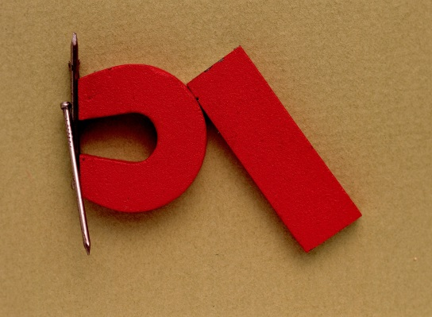

ELEKTROMAGNETISMOA (1/3)
1. ELEKTROMAGNETISMOA
IKASI:
Imanak substantzia magnetikoak erakartzeko ahalmena duten gorputzak dira, besteak beste, kobaltoa, altzairua eta nikela. Ahalmen horri magnetismo esaten zaio, eta bertan dauden erakarpen-indarrei indar magnetikoak esaten zaie. Bi iman mota daude: batetik, iman naturalak, propietate magnetikoa modu naturalean dutenak, besteak beste magnetita; eta, bestetik, iman artifizialak, propietate magnetikoa dutenak imantazio-prozesu baten ondorioz (igurztearen bidez, kontaktuaren bidez edo korronte elektrikoaren bidez).
Imanek ipar poloa eta hego poloa dute, eta, inguruan, eremu magnetikoa sortzen dute; eremu hori imanetik hurbil dagoen aldea da, eta, bertan, indar magnetikoaren ondorioak sortzen dira.
*lNTEF-MECen irudien bankutik hartutako irudiak. (CC BY-NC-SA 3.0)
Begiratu ea nola dabilen iparrorratza eta zer zerikusi duen imanekin.
Poloen Legeak dakarrenaren arabera, bi iman hurbiltzen direnean, beren eremu magnetikoek elkarri eragiten diote eta, horrela, erakarpen- edo aldarapen-indarrak sortzen dira. Alegia, aurkako poloek elkar erakartzen dute, eta polo berdinek, elkar aldarazten.
Magnetismoaren eta elektrizitatearen artean erlazio bat dago, elektromagnetismo izenekoa, eta Christian Oersted-ek aurkitu zuen; Berak ikusi zuen kable batean zirkulatzen duen korronte elektrikoa gai dela eremu magnetismoa sortzeko inguruan. Beraz korronte elektrikoaren propietatea ere bada.
Ikusi, hurrengo animazio honetan, imanen portaera eta elektromagnetismoa nola sortzen den.
Hurrengo lotura hauek ere ikus ditzakezu: